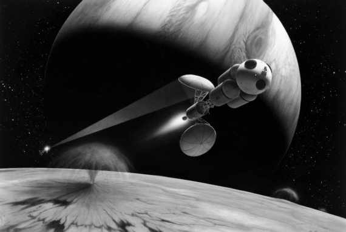
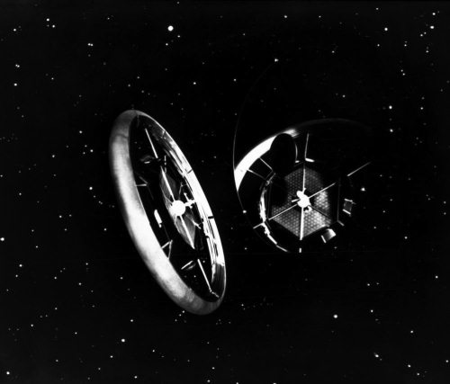

Кратко об истории космонавтики США . Эпилог
Если бы я писал эту книгу пять лет назад, передо мной не стояло бы вопроса, чем ее завершить. Тогда все было предельно ясно и понятно – американцы возвращаются на Луну и намерены в обозримом будущем организовать экспедицию на Марс. Такие цели провозгласил тогдашний президент США Джордж Буш– младший.
Вечером 14 января 2004 года Буш приехал в штаб-квартиру НАСА в Вашингтоне и выступил с программной речью, в которой обрисовал новые горизонты американской космической программы. Выступление продолжалось 22 минуты и транслировалось в прямом эфире всеми ведущими телекомпаниями мира. Вот что сказал тогда американский президент:
…Вдохновленные тем, что было раньше, и имея четкие цели, сегодня мы прокладываем новый курс космической программы Америки. Мы дадим НАСА новый фокус и мечту для будущих исследований. Мы построим новые корабли, которые понесут людей вперед во Вселенную, чтобы получить новый плацдарм на Луне и подготовиться к новым путешествиям в другие миры…
Мы предпринимали космические путешествия потому, что желание исследовать и понять – это часть нашего характера. И этот поиск принес осязаемые блага, которые улучшили нашу жизнь бесчисленными способами… Несмотря на все эти успехи, нам еще много нужно исследовать и узнать.
За последние 30 лет ни один человек не ступил на другую планету и даже не поднялся в космос выше, чем на 386 миль (621 километр. – Прим. автора), это примерно расстояние между Вашингтоном и Бостоном. Почти за четверть века Америка не создала нового корабля, чтобы расширить исследования космоса человеком.
Америке пора предпринять следующие шаги.
Сегодня я объявляю новый план исследования космоса и расширения присутствия человека по нашей Солнечной системе. Мы начинаем эти работы быстро, используя существующие программы и людей. Мы будем двигаться постепенно: каждый раз – одна задача, одно путешествие, одна посадка.
Наша главная цель – закончить Международную космическую станцию к 2010 году (в основном это было сделано действительно к 2010 году. – Прим. автора).
Мы закончим то, что мы начали, и выполним наши обязательства перед 15 зарубежными партнерами в этом проекте. Мы сфокусируем наши будущие исследования на этой станции на воздействии длительного космического путешествия на биологию человека… Исследования на борту станции и на Земле помогут нам лучше понять и преодолеть трудности, которые ограничивают исследования. Через эти работы мы создадим опыт и технику, необходимые для обеспечения будущих исследований космоса.
Чтобы добиться этой цели, мы, как можно скорее, возобновим полеты шаттлов, с соблюдением вопросов безопасности и в соответствии с рекомендациями Комиссии по расследованию катастрофы «Колумбии». Главным назначением шаттла в течение нескольких лет будет завершение сборки МКС. В 2010 году, после почти 30 лет службы, космический челнок будет отставлен от эксплуатации (как мы знаем, это случится на год позже объявленного Бушем срока. – Прим. автора).
Наша вторая цель – создать и испытать в 2008 году новый космический корабль, корабль для пилотируемых исследований, и провести первый пилотируемый полет не позднее 2014 года.
Этот корабль должен быть способен доставить астронавтов и ученых на космическую станцию после того, как служба шаттлов закончится.
Но основной задачей этого корабля будет нести астронавтов за пределы нашей орбиты, к другим мирам. Это будет первый корабль такого рода после командного модуля «Аполлона».
Наша третья цель – вернуться к 2020 году на Луну как на точку старта для полетов дальше. Не позднее 2008 года мы начнем посылать серию автоматических аппаратов на лунную поверхность для изучения и подготовки к будущим пилотируемым исследованиям. Используя новый корабль, мы предпримем длительные пилотируемые полеты на Луну уже в 2016 году, с целью жить и работать там на все более длительные периоды времени.
Возвращение на Луну – важнейший шаг в нашей космической программе. Установление длительного присутствия человека на Луне может очень сильно снизить стоимость дальнейших исследований космоса и сделает возможным даже более амбициозные миссии. Поднимать тяжелые корабли и топливо против гравитации Земли дорого. Корабли, собранные и оснащенные на Луне, смогут уходить от ее намного меньшей гравитации, используя меньше энергии и потому за намного меньшую цену. На Луне имеются обильные ресурсы. Ее грунт содержит сырье, которое может быть добыто и переработано в ракетное топливо и воздух для дъхания.
Луна – это логический шаг к будущему прогрессу и достижениям. С опытом и знаниями, полученными на Луне, мы будем тогда готовы предпринять следующие шаги в исследовании космоса – пилотируемые полеты на Марс и далее.
По мере увеличения нашего знания мы создадим новые [системы] генерации энергии, тяги, жизнеобеспечения и другие системы, которые смогут обеспечить более далекие путешествия.
Мы не знаем, где закончится этот путь. Но мы знаем, что люди устремятся в космос.
Это будет великая и объединяющая цель для НАСА. И мы знаем, что вы ее достигнете.
Я дал администратору О’Кифу распоряжение пересмотреть все существующие работы НАСА в области космического полета и исследований, и направить их на те цели, которые я назвал…
Мы пригласим другие государства разделить с нами вызовы и возможности этой новой эры открытий. Цель, которую я сегодня поставил, – это Путь, а не Гонка. И я призываю другие страны присоединиться к нам на этом пути в духе сотрудничества и дружбы. Достижение этих целей требует долгосрочных усилий. В настоящее время бюджет НАСА на 5 лет составляет86 миллиардов долларов. Большая часть финансирования, которая нам нужна для новых работ, будет получена путем перераспределения 11 миллиардов долларов из этого бюджета. Однако нам нужны и дополнительные ресурсы. Я попрошу Конгресс увеличить бюджет НАСА примерно на 1 миллиард долларов в течение пяти следующих лет. Этот прирост вместе с перенацеливанием нашего космического агентства будет прочным началом для достижения целей, которые мы ставим сегодня. И это только начало. Будущие решения о финансировании будут определяться прогрессом в достижении этих целей.
Человечество влечет к небу та же сила, которая влекла нас к неизвестным землям через открытое море. Мы решили исследовать космос потому, что это улучшит нашу жизнь и поднимет национальный дух.
Поэтому давайте продолжим наш путь, и да благословит нас Бог.
Выступление президента было выслушано с нескрываемым интересом. Уже на следующий день многие страны мира выразили желание внести свою лепту в американскую программу освоения космоса, присоединившись к ней. Аналитики начали прикидывать, когда мы сможем послать экспедицию на Марс. Именно эта цель в умах людей выглядит самой притягательной.
В том, что реакция была именно такой, нет ничего сверхъестественного. Тот кризис, который мировая космонавтика переживает уже много лет, всем надоел, поэтому не только американцам, но и жителям других стран хотелось услышать нечто такое, что могло вселить в их души надежду на лучшее будущее человечества. Они и услышали то, что хотели.
Однако эйфория первых дней весьма скоро сменилась разочарованием. Обозначив перспективы, президент Буш весьма туманно обрисовал тот путь, по которому придется пройти.
С одной стороны, он достаточно четко сформулировал ближайшие планы американской космонавтики:
2008 год – начало полетов автоматических станций на Луну;
2010 год – завершение эксплуатации кораблей многоразового использования;
2014 год – начало полетов нового пилотируемого корабля CEV;
2016 год – возобновление пилотируемых полетов на Луну.
Но, с другой стороны, он не смог так же четко сказать, как эти планы будут реализованы. Рассуждения об увеличении бюджета аэрокосмического ведомства на один миллиард долларов за пять лет могли «порадовать» только тех, кто не знает истинную цену «космических игрушек». У остальных же после выступления Буша появилось гораздо больше вопросов, чем существовало ответов.
И все-таки это был план, который нарисовал хоть какую-то перспективу, демонстрировавшую, что у космонавтики есть перспективы, и она не станет «вещью в себе». А плох он был или нет, – это должно было показать будущее. Причем самое ближайшее.
Работы по плану Буша в Америке начались практически сразу. Вскоре американцы определились с теми техническими средствами, которые требовалось создать, чтобы воплотить в жизнь идеи президента.
Президент США Джордж Буш провозглашает космическую инициативу (январь 2004 г.)
Предполагалось, что основой этой грандиозной программы станут ракеты-носители «Арес-1» и «Арес-5», а также шестиместный пилотируемый корабль «Орион». Если внимательно присмотреться к макетам ракет и корабля, нетрудно увидеть, что это современное воплощение все тех же «Сатурна» и «Аполлона», с помощью которых в 1960-х годах американцы выиграли лунную гонку. По крайней мере, принципиальные решения весьма схожи. Конечно, обидно, что сделанный шаг был не столь впечатляющим, как хотелось бы. Ну, бог с ним. В любом случае это было хоть какое-то развитие, которое позволяло человеку вновь вырваться за пределы околоземной орбиты.
Еще недавно я с большим удовольствием и весьма подробно описал бы и «Аресы», и «Орин», и порассуждал бы о том, как будут проходить межпланетные экспедиции. Теперь же не буду это делать по той причине, что сегодня в американской космической программе уже нет планов возвращения на Луну. Пришедший в Белый дом в январе 2009 года новый президент Барак Обама фактически похоронил программу своего предшественника и перевел американскую космонавтику на новые рельсы. Правда, до сих пор так и непонятно, на какие.

К Марсу по Бушу
Свои взгляды на космос Обама сформулировал весьма туманно. С одной стороны, он всегда подчеркивал (и продолжает это делать), что США должны предпринимать шаги для того, чтобы сохранять и укреплять свое присутствие в космическом пространстве. В первую очередь, это касается военных аспектов освоения космоса. Но, с другой стороны, президент США не в восторге от тех амбициозных проектов, которые разрабатывались НАСА в последние годы. По его мнению, возвращение на Луну не должно являться для американцев самоцелью. Тем более что с технологической точки зрения этот шаг вряд ли принесет какие-либо дивиденды американской экономике. Также Обама убежден, что и экспедиция на Марс не должна быть той целью, на которую следует ориентироваться американской космонавтике. Если уж и лететь куда-то, то лучше к астероидам. Ну что ж, астероиды так астероиды. По большому счету, сейчас не так важно, куда лететь, главное – лететь.
Самое ценное, что дала американской пилотируемой космонавтике политика Обамы, – это привлечение к ней частного бизнеса.

Орбитальные станции будущего
В связи с предстоящим завершением полетов шаттлов и неясными перспективами с новыми кораблями, американское правительство предложило ряду частных компаний заняться разработкой собственных космических аппаратов, которые возьмут на себя заботу по доставке грузов и астронавтов на борт Международной космической станции, в проекте которой США собираются участвовать как минимум до 2020 года. Эти же корабли планируется использовать для автономных полетов по околоземной орбите, в том числе и в туристических целях. Возможно, что на них также будут организованы экспедиции к Луне и в точки либрации. А может, еще куда-нибудь.
Частники весьма активно взялись за работу. Тем более что правительство оказывает им финансовую поддержку. В 2010 году «Дракон», первый частный корабль, разработанный специалистами компании «Спейс-Икс», успешно побывал в космосе. И отмечу, что это произошло на два года раньше, чем планировалось. На стапелях строятся и другие корабли, которые начнут испытываться уже в самое ближайшее время.
Тем не менее сегодня американская космонавтика переживает трудные времена. Она находится на перепутье, когда можно пойти либо «направо», сокращая свою космическую деятельность, либо «налево», планомерно двигаясь вперед. Хочется надеяться, что США выберут второй вариант космического развития. А еще больше хочется надеяться, что по такому же пути пойдут и другие страны, участвующие в освоении космического пространства. И, в первую очередь, Россия.